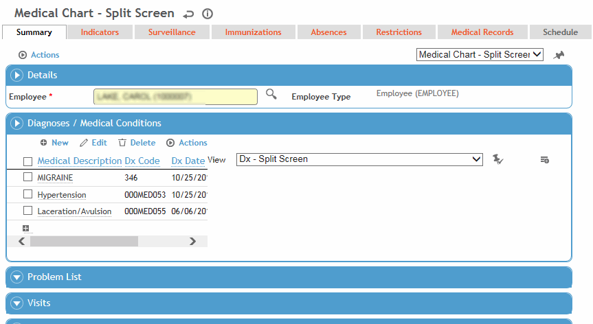
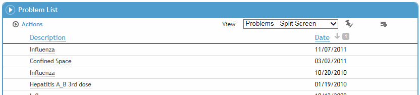
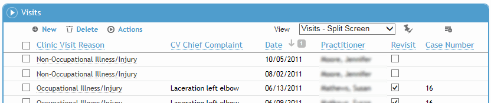
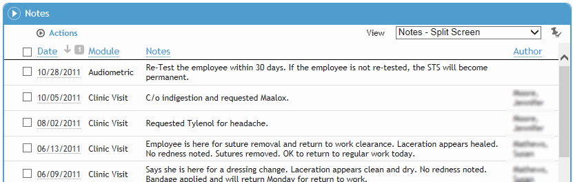
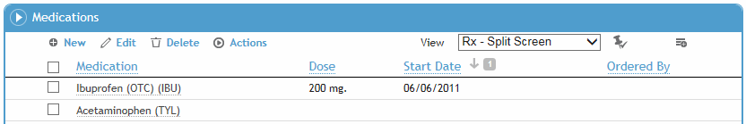
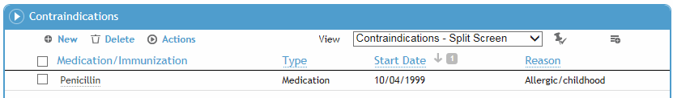
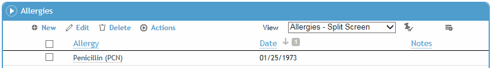
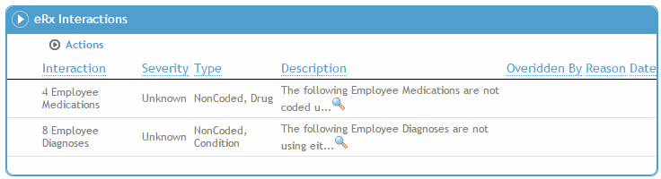

The Summary tab includes the following sections:
Diagnoses/Medication Conditions
Problem List
Visits
Notes
Medications
Contraindications
Allergies
eRx Interactions
The Diagnoses/Medical Conditions section shows all medical diagnoses recorded for this employee in the Demographics, Medical Chart, Clinic Visits, Case Management, or Immunization modules. For information about entering a diagnosis, see Recording Medical Conditions.

The Problem List is a report that includes all medical information that has been identified as a problem for the currently selected employee. For more information, see Working with the Problem List.

The Visits section lists all the employee’s clinic visits. To view a particular visit click the date link, or click New to link to the Clinic Visits module. For more information, see Working with Clinic Visits.

The Notes section shows all notes recorded for the selected employee in any module. To view a particular note, click the link. To print a note, select the checkbox and choose Actions»Print.

The Medications section displays all medications recorded for this employee in the Demographics, Body Fluid Exposure, Medical Chart, Clinic Visits, Clinical Testing, or Immunization modules. For information about entering a medication, see Recording Medications and Contraindications.

The Contraindications section displays all contraindications recorded for this employee in the Demographics, Body Fluid Exposure, Medical Chart, Clinic Visits, Clinical Testing, or Immunization modules. For information about entering a contraindication, see Recording Medications and Contraindications.

The Allergies section displays all allergies recorded for this employee in the Demographics, Body Fluid Exposure, Medical Chart, Clinic Visits, Clinical Testing, or Immunization modules. For information about entering an allergy, see Recording Allergies.

If you are set up as an eRx Prescriber, the eRx Interactions section displays any interactions identified by the FDB database as a result of a medication prescribed electronically. For more information, see Recording Medications (eRx).
